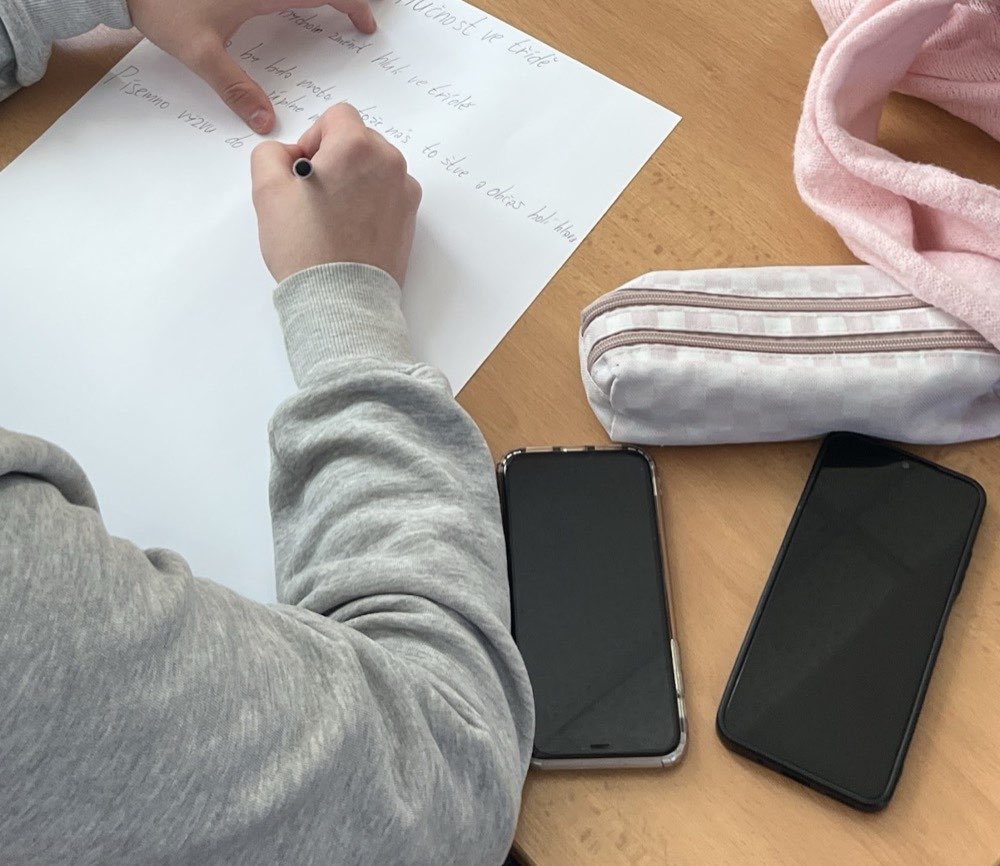
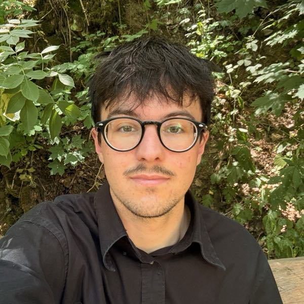
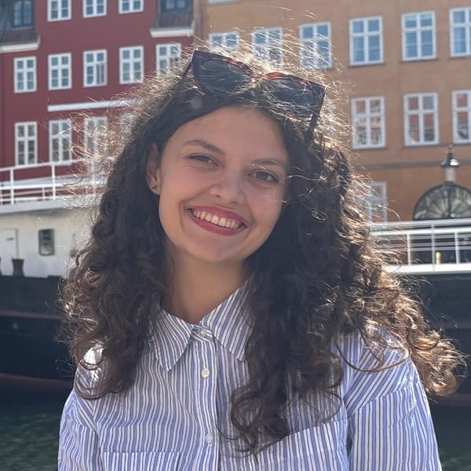
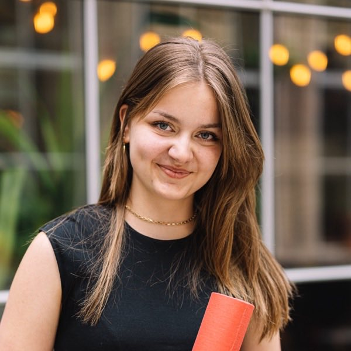
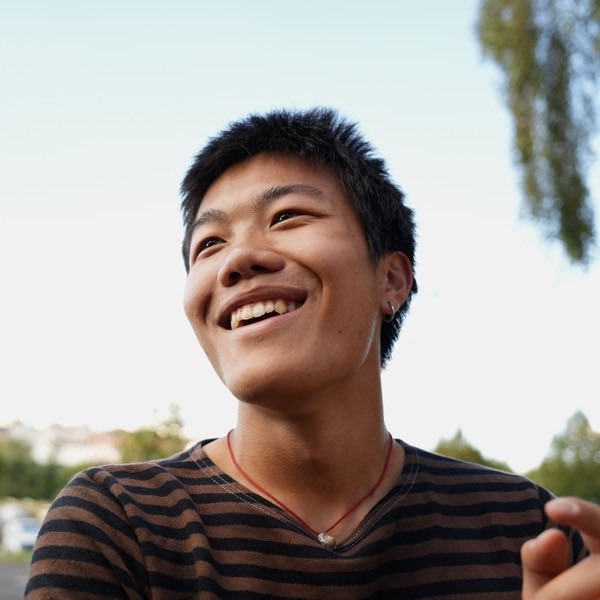

Vaši žáci mají hlas. Už v patnácti.
Vozíme do škol workshopy o občanské angažovanosti, moderních dějinách a kritickém myšlení. Pro žáky 8. a 9. tříd, po celé republice, zdarma.
O projektu
Angažovanost začíná drobnými činy
Jsme neformální skupina pěti studentů napříč republikou. Naším cílem je ukázat žákům 8. a 9. tříd základních škol, že občanská angažovanost může začít i drobnými činy.
Drobné i větší příležitosti participace jim pomůžou lépe poznat vlastní hodnoty a schopnosti – a získat jistotu, že jejich hlas má ve společnosti váhu, i když se v patnácti teprve rozhodují, kam dál.
Workshopy vedou studenti středních a vysokých škol. Věkový odstup je malý, a to je záměr: o tom, jak se dá něco změnit, se lépe mluví s někým, kdo si tím sám nedávno prošel.
Tematické okruhy
Pět témat, ze kterých si vyberete
Program se přizpůsobuje aktuálnímu dění – volbám, výročím, tomu, co zrovna hýbe médii. Vyberete si jeden okruh, kterému se budeme věnovat do hloubky.
Společná identita a hodnoty
Co nás jako společnost spojuje. Tradice, historické momenty jednoty i kulturní prvky, které propojují generace a regiony – humor, hudba, sport.
Česko ve světě a v Evropě
Role České republiky v Evropě i ve světě. Členství v EU, fungování mezinárodních organizací a globální výzvy, které se nás týkají.
Občanská angažovanost
Co znamená být aktivním občanem a jak lze přispět ke zlepšení svého okolí – od školního parlamentu po komunitní projekty. Žáci si nanečisto zkusí vlastní projekt.
Média a kritické myšlení
Jak rozlišit pravdivé informace od dezinformací, jak fungují média v demokracii a jak vést respektující diskusi i při rozdílných názorech.
Životní prostředí a Česko
Jak světové ekologické výzvy dopadají na život v České republice a proč mají smysl i malé změny v každodenním chování.
Jak to probíhá
Tři hodiny, ve kterých se mluví hlavně o nich
Přijedeme k vám do školy. Stačí běžná učebna, ideálně s možností promítat. Skupina může mít 20 až 60 žáků, z jednoho i z obou ročníků.
Představení a rozehřátí
Krátce o nás a o tom, proč to děláme. Anonymní hlasování na otázku, jestli si žáci myslí, že jejich názor může něco změnit.
Seznámení s tématem
Konkrétní příběh z praxe, kdy se něco podařilo změnit společnou participací. Pak sbíráme, co trápí žáky – ve škole, ve městě.
Vlastní projekt nanečisto
Ve skupinách žáci vymýšlejí malý projekt, který by něco zlepšil, a představují ho ostatním. Pracují s pracovním listem: co, proč, kdo a jak.
Přednáška a diskuse
Pohled do minulosti – proč angažovanost fungovala a proč ne. Sametová revoluce, normalizace, ekologická hnutí.
Kde se dá zapojit
Konkrétní tipy pro jejich věk: výměny mládeže, DofE, školní parlamenty, dobrovolnictví, Erasmus. Věci, o kterých většina z nich nikdy neslyšela.
Reflexe a zpětná vazba
Shrnutí a dotazník. Zpětnou vazbu od žáků i pedagogů používáme k úpravám programu.
Odezva ze škol
Co říkali na první škole
Dle našich žáků byl program zajímavý, bombastický.
ZŠ Žulová, z článku na webu školy
Po workshopu vyplnilo devět žáků anonymní dotazník. Všichni odpověděli, že by workshop doporučili dalším třídám.

Byla jsem ráda, že mi to pomohlo se nasměrovat a urovnat si myšlenky.
Byla to zábava a bylo to dost motivační.
Nejlepší byl ten konec — ty zkušenosti a dozvědět se o zajímavém životě jiných lidí.
Z anonymního dotazníku pro žáky.
Kdo za tím stojí
Iniciativa Vlast
Pět lidí, kteří projekt vedou vedle školy a práce.




Přihláška
Chcete workshop u vás ve škole?
Napište nám a domluvíme termín. Workshop je pro školu i pro žáky zdarma – hradí ho evropský grant.
Nebo nám rovnou napište na info@vlastnaskolach.cz.
Přihláška dorazila. Děkujeme!
Ozveme se do několika dnů na e-mail, který jste uvedli.